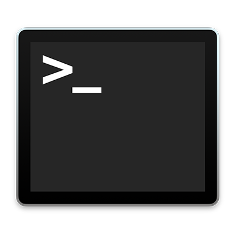

Overview
When we talked on Tuesday, we went over a variety of badass things. We talked about some tools a developer uses:
- Terminal
- Homebrew
- git
- Node
- npm
We talked about GitHub, which you just used to install this website. We
also talked about live-server which is a development
dependency that makes developing websites easier. We talked about git
and you made your first git repo and first git commit.
Tools
Terminal
What is it?
Terminal is a macOS program that lets you interact with the computer via text commands. Because macOS and Linux are related to UNIX, an operating system from the past times, the stuff Terminal runs is sometimes called UNIX or *NIX (as in UNIX/Linux). Googling for instance "opening a directory UNIX" will give you a lot of Terminal related results. It's also important to know that, while Linux is different from macOS in many ways, lots of times tools and commands that you find that are for Linux, will also work in macOS.
We talked about man pages and --help. These
are common UNIX ways of getting more information about a command line
program. You could type man git, or
git --help to see its man page.
How did we use it?
We used Terminal to install Homebrew. We used Homebrew in Terminal to install various things, more on that later.
We also went over a few UNIX commands:
-
lslists the directories and files in the working directory. It takes some options, which you indicate by adding a space, a dash and some letters.lstakes a bunch of options includingaandl.ls -aindicates that we want to list directories including hidden directories.ls -lindicates that we want to list all directories in a formatted table with some extra information. We also combined these two options! You can combine any options together:ls -laorls -al. We also used an argument to look inside a specific folder. If you followlswith at directory name, you will list the files and directories in that directory.ls ~/GitHubshould list the files and directories in your new GitHub folder. -
pwdshows the path to working directory. Typepwdto find out where in your computer you are! -
cdchanges the working directory.cdis followed by the name of the directory you want to enter. I've been sort of implying something in the README and in thelscommand above with all this~talk. When a command takes a file or directory as an argument, you can usually refer to it in one of two ways. With an absolute path, or with a relative path. An absolute path starts with the root of your whole file system, /. A relative path starts with the name of a folder in the current working directory. ~ is short for an absolute path to your home folder.
Additional Resources
Homebrew
What is it?
Homebrew is a package manager. It downloads, stores and updates packages for you. It makes is easy to download all the stuff you would need as a developer.
How did we use it?
If you are installing a console program, you can type
brew install and then the name of the program. If you are
installing a program that has a GUI, you need to use brew cask:
brew install and then then name of the program.
We used brew cask to install Visual Studio Code, our code editor:
brew cask install visual-studio-code. We also installed
Node and it's package manager, npm: brew install node.
We talked about verifying that a command line tool had been installed by
entering which followed by the name of the program.
Additional Resources
git

What is it?
git is helpful for tracking changes made by you and others in a project and it has all kind of handy functions for returning to old states of work and creating branches so that you can work on something without interfering with the rest of the code base.
How did we use it?
We initialized a git repository with git init. We made some
changes to our code and then, when we were ready to commit those changes
to the repository, We used git status to see which files we wanted to
commit. When we saw that node_modules was being considered "untracked"
by git, we created and then added them to our .gitignore file so that
git would not commit them or add them to staging.
We staged our changes with
git add -A. Notice the -A here, which is really similar to
the -l, -a, or -la options that we gave to ls. In this case A means, add
all untracked or unstaged code to staging so that we can review it and
commit it. We checked git status again to make sure that
the files in stage were the files we wanted to commit and then we
committed them with git commit -m followed by a short
message describing what is in the commit we were making.
Additional Resources
Node

What is it?
We didn't talk too much about Node and what it is. It is a JavaScript runtime build on Chrome's "V8" JavaScript engine. What that means exactly will become clearer later on as you start writing more JavaScript.
npm

What is it?
Like Homebrew, npm is a package manager. It stands for Node Package Manager. npm is responsible for downloading dependencies for you projects, and maintaining your package.json file. Ultimately, it can be used to publish projects that you work on in the npm repository for others to download and use.
How did we use it?
We use npm init to start a new Node project. We were taken
through a few prompts that had us set up things like the name of the
project, the author, and the kind of license it should use. When we were
done, we had a new package.json file.
We also used npm to install a development dependency, live-server. We
did this with the command npm install -D live-server. This
useful utility creates a server on your computer that automatically
detects changes to files on your project and reloads itself so you can
always see the latest version of what you are working on.
We do not have direct access to live-server, however, so we added a
script called "start" to our package.json and told npm that we wanted it
to use live-server on our project directory when we ran that start
script. We ran that script with npm run start and verified
that it worked.
We also saw that our package.json was keeping track of this dependency under a section called "devDependencies", which is for dependencies that make development easier, but won't be used when we deploy code to production.
Additional Resources
Websites
MDN

MDN is an authoritative reference for HTML, CSS and JavaScript in the browser. Sites like W3 School have information but it isn't always accurate. Plus, Mozilla is just a great organization!
You can use the site to look up things like what a tag or css property is. They also have great tutorials you can follow that will give you a good sense of different technologies. Their web development tutorials w have a lot of great information for learning about what being a web dev entails.
GitHub

Have a git repository on your computer is great, but if you want to work with other developers, you have to be able to share it with them. GitHub lets you host remote repositories that are accessible to others.
It's important to remember, as you make changes to your local
repository, that you need to push to GitHub with git push.
Their bizarre mascot is called "Octocat" and, presumably, is what happens when a cat and an octopus decide to get freaky.
Altdobe
When I was first learning web development, I got a real kick out of the design part of it. I ended up wanting something like the Adobe Creative Suite, but there was no way on this earth I was going to pay a huge monthly fee for some software I was going to use casually once and awhile.
After some research I discovered that while Photoshop and Illustrator might be the industry standard, but there are solid alternatives, both free and not. If doing some visual design is interesting to you, these might be helpful.
Free and Open Source
GIMP

GIMP comes preinstalled on many Linux distros, and it's a standard for editing photos in the Free and Open Source ("FOSS") community. I've found it's interface to be decent, and it's powerful enough for most of your photo and pixel editing needs. This is the FOSS answer to Photoshop.
Inkscape
Like GIMP, Inkscape is the standard in the FOSS community for making illustrations. It's a FOSS alternative to Illustrator. I personally find its interface annoying and I don't like it. Maybe given time, I would come around, though. And it is free!
Less expensive, less evil, but not free
Affinity Designer and Affinity Photo
Affinity Designer and Affinity Photo are pretty new pieces of design software. I've been using them since they were in beta, and they've come a long way. They have most of the power of Adobe products, but they are about $50 each. I love them, and if you feel like Inkscape and GIMP aren't cutting it, these are definitely worth a look.
Likely Designer is all you would need. It has some pixel/photo editing abilities, but is mostly competing with Illustrator. If you find you want to do more powerful photo editing, though, Affinity Photo is great.
Sketch

Sketch is a macOS app that is really big in the UI/UX design community. It's roughly like Illustrator but geared toward building UI/UX elements. I have never used it, but I've heard good things about it, and it's a well regarded program.